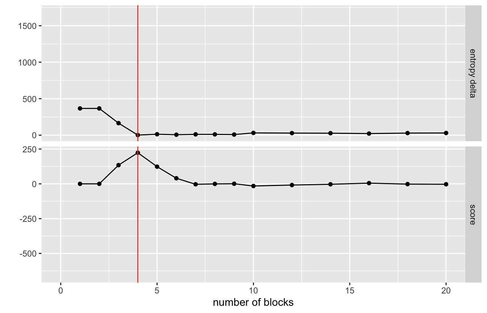
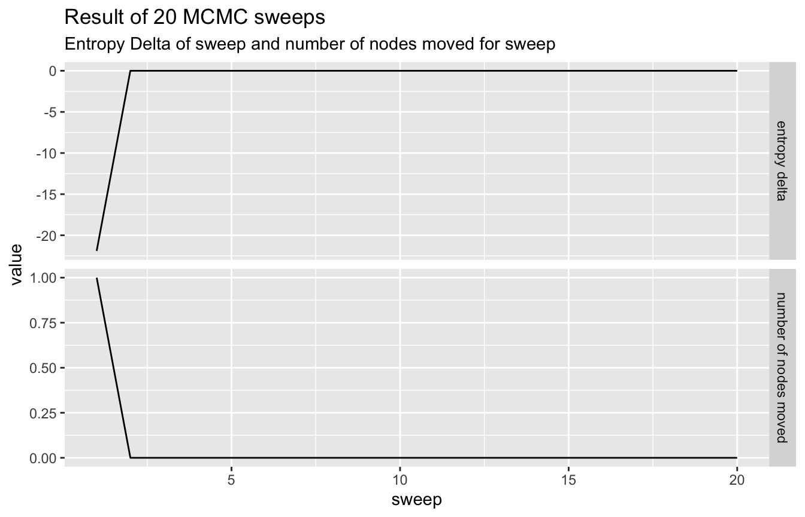
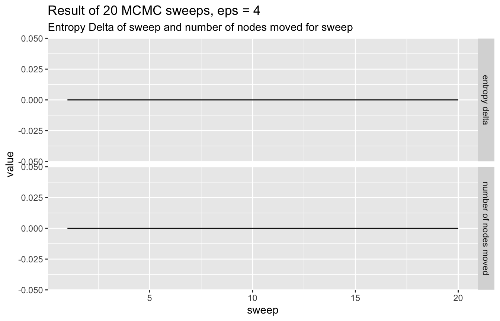
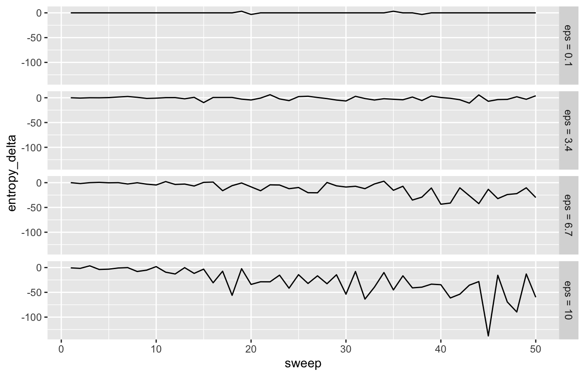
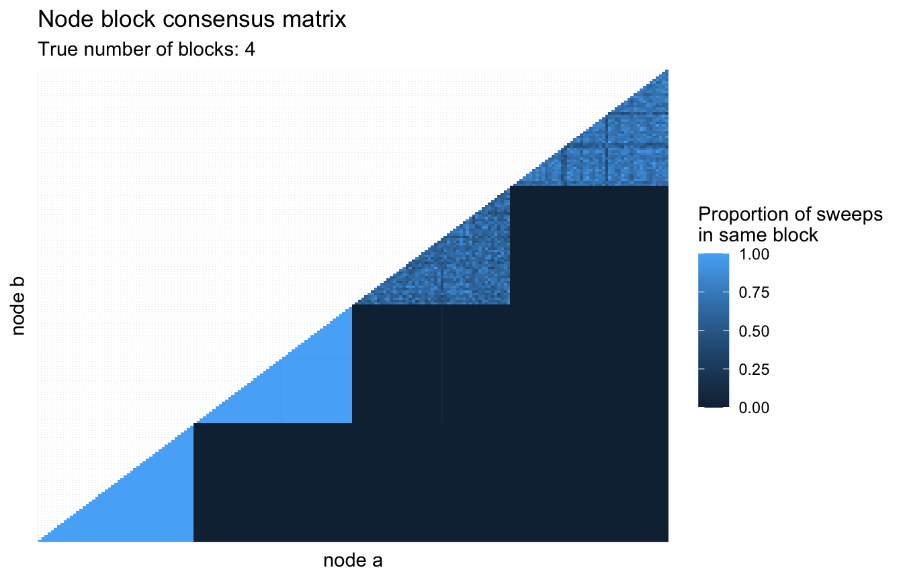
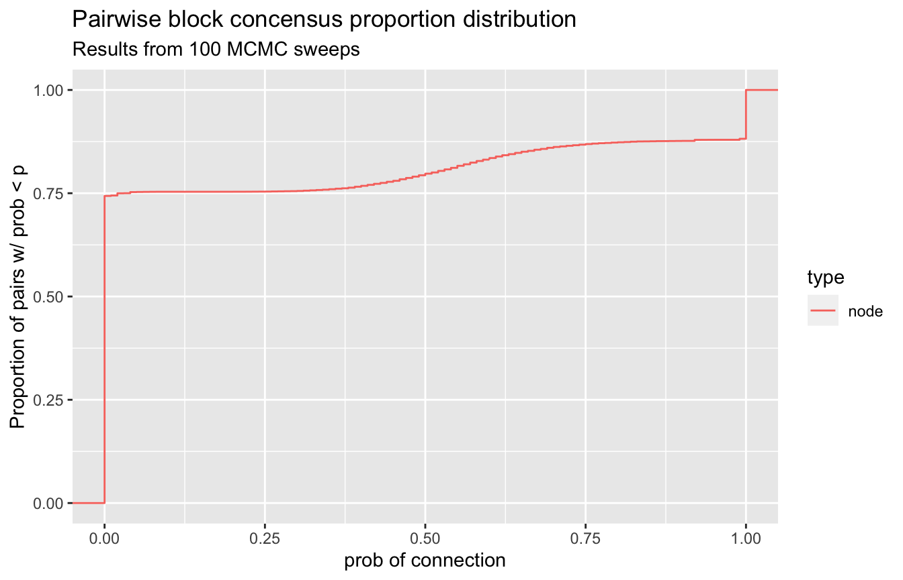

library(sbmr)
library(glue)
library(dplyr)
library(tidyr)
library(purrr)
library(ggplot2)
library(forcats)In this document we will explore how to use the function mcmc_sweep() to sample from the posterior of a simulated network and investigate the results of doing so.
Setting up network structure
First we will generate our simulated network. First we set a seed to make the structure reproducable and then we draw our random network using the sim_basic_block_network() function to draw from a network with 3 groups and 40 nodes per group.
set.seed(42)
n_blocks <- 4 # Total number of blocks
block_size <- 50 # How many nodes in each block
network <- sim_basic_block_network(
n_blocks = n_blocks,
n_nodes_per_block = block_size,
return_edge_propensities = TRUE,
random_seed = 42
)First we can make sure our edge propensities look reasonable
network$edge_propensities %>%
ggplot(aes(x = block_1, y = block_2)) +
geom_tile(aes(fill = propensity)) +
theme_minimal()
Next, we can visualize the actual drawn network.
visualize_network(network, width = '100%')We can see a decent amount of separation with perhaps more cohesion between the green and blue nodes than the orange
Initializing the chain location
In an attempt to set our initial chain location to an optimal position we will agglomeratively merge the network using the collapse groups function. This will return a list of results for different model sizes.
network <- network %>%
collapse_blocks(report_all_steps = TRUE, sigma = 1.1)network %>%
visualize_collapse_results(heuristic = 'dev_from_rolling_mean') +
geom_vline(xintercept = n_blocks, color = 'orangered') +
xlim(0,20)
#> Warning: Removed 42 rows containing missing values (geom_point).
#> Warning: Removed 21 row(s) containing missing values (geom_path).
So we can use the helper function choose_best_collapse_state() to scan through the results and find the optimal partitioning based upon the designated hueristic. The plot above is showing the score from the heuristic where the best collapse is determined by deviation from rolling mean (lower plot). Any scoring function can be provided as long as it takes as an argument the entropy column and or number of blocks column and returns a vector of scores where the highest value is the break to choosen.
Right now we will stick with the deviation from rolling mean to choose the best number of blocks.
network <- network %>%
choose_best_collapse_state(heuristic = "dev_from_rolling_mean", verbose = TRUE)
#> Choosing collapse with 4 blocks and an entropy of 1.3416.Visualizing these results.
We can investigate the structure of this chosen partitioning against the true structure that we simulated using visualize_network()…
true_to_inferred_table <- function(network){
right_join(state(network),
network$nodes,
by = 'id') %>%
filter(level == 0) %>%
rename(inferred = parent) %>% {
table(.$inferred, .$block)
}
}
true_to_inferred_table(network)
#>
#> g1 g2 g3 g4
#> bl_node_123 0 0 50 0
#> bl_node_199 0 0 0 50
#> bl_node_4 50 0 0 0
#> bl_node_99 0 50 0 0So we already have an almost perfect separation into the 4 blocks. This should be a good starting place for our sampling.
Sampling from the posterior
Now that we have our model in a starting place hopefully close to the median of the posterior we can initiate the MCMC sampling. We will start by doing a few sweeps to see if our model shape has stabalized at all.
num_sweeps <- 20
network <- network %>%
mcmc_sweep(num_sweeps = num_sweeps,
eps = 0.1,
track_pairs = FALSE)
network %>%
visualize_mcmc_trace() +
labs(
title = glue::glue('Result of {num_sweeps} MCMC sweeps'),
subtitle = "Entropy Delta of sweep and number of nodes moved for sweep"
)
So we get almost no movement at all, indicating the model has stuck into a local (in this case the global) minimum.
We can force it to explore a bit more by upping the epsilon value for the model.
num_sweeps <- 20
network <- network %>%
mcmc_sweep(num_sweeps = num_sweeps,
eps = 4,
track_pairs = FALSE)
network %>%
visualize_mcmc_trace() +
labs(
title = glue::glue('Result of {num_sweeps} MCMC sweeps, eps = 4'),
subtitle = "Entropy Delta of sweep and number of nodes moved for sweep"
)
true_to_inferred_table(network)
#>
#> g1 g2 g3 g4
#> bl_node_123 0 0 50 0
#> bl_node_199 0 0 0 50
#> bl_node_4 50 0 0 0
#> bl_node_99 0 50 0 0This increased epsilon value resulted in one block being split into two smaller ones. A thing to note however, even though we have more groups than we should, never have an infered group that spans more than a single true group.
Comparing different epsilons
Let’s run 50 sweeps for a few different epsilon values and see how the traces compare.
# Function to run n sweeps from a freshly initialized model
run_sweeps_at_eps <- function(eps, num_sweeps = 50){
# Refresh sbm to right after collapsing initialization
# and run sweeps at given epsilon value
network %>%
choose_best_collapse_state(heuristic = "dev_from_rolling_mean") %>%
mcmc_sweep(num_sweeps = num_sweeps, eps = eps) %>%
get_sweep_results() %>%
pluck('sweep_info') %>%
mutate(sweep = 1:n(), label = glue::glue('eps = {eps}'))
}
seq(from = 0.1, to = 10, length.out = 4) %>%
map_dfr(run_sweeps_at_eps) %>%
mutate(label = forcats::fct_inorder(as.factor(label))) %>%
ggplot(aes(x = sweep, y = entropy_delta)) +
geom_line() +
facet_grid(label~.)
#> Warning in bind_rows_(x, .id): Vectorizing 'glue' elements may not preserve
#> their attributes
#> Warning in bind_rows_(x, .id): Vectorizing 'glue' elements may not preserve
#> their attributes
#> Warning in bind_rows_(x, .id): Vectorizing 'glue' elements may not preserve
#> their attributes
#> Warning in bind_rows_(x, .id): Vectorizing 'glue' elements may not preserve
#> their attributes
As expected the lines get less stable as epsilon increases.
Pairwise block consensus
The mcmc_sweep() method has an option to keep track of how connected each node is with all other nodes. The idea being that the more frequently that two nodes are in the same block together, the more confident the model is that they are truly connected. We can visualize this by accessing the pairing_counts dataframe attached to the outputs of mcmc_sweep() with track_pairs = TRUE.
First we will run one hundred sweeps for nodes with epsilon set to 0.5.
network <- network %>%
choose_best_collapse_state(heuristic = "dev_from_rolling_mean") %>%
mcmc_sweep(num_sweeps = 100, eps = 0.5, track_pairs = TRUE)Then we can look at the supplied pairing_counts dataframe to see how often pairwise nodes are connected to eachother.
network %>%
get_sweep_pair_counts() %>%
ggplot(aes(x = node_a, y = node_b, fill = proportion_connected)) +
geom_raster() +
theme(
axis.text = element_blank(),
axis.ticks = element_blank()
) +
labs(x = "node a",
y = "node b",
fill = "Proportion of sweeps\nin same block",
title = "Node block consensus matrix",
subtitle = glue::glue("True number of blocks: {n_blocks}"))
Another method to investigate these block concensus results is to look at the ECDF of the node connection probabilities.
A good behavior indicating there are strong clusters in your data is an ECDF that has a large flat section in the middle, indicating that almost all of your node connection propensities are close to zero or close to one. We can look at this for our mcmc results as well. This functionality is supplied with the function visualize_propensity_dist().
visualize_propensity_dist(network)
So we see a very strong flat line from zero all the way to a small bump at around 0.65 and then again a sharp bump right at one. This indicates that a few nodes sometimes split off into other groups.
A last way of looking at this is to create a new network from our data. This time drawing an edge between two nodes if their pairwise connection probability was above some threshold. Once we have this network we can plot it and see if isolated subgraphs appear in the network. Deciding any threshold is fraught with danger, but if we keep it small we should be in the clear. This investigation is provided with the function visualize_propensity_network().
Let’s check our MCMC sweep results with it…
visualize_propensity_network(network)So we can see that we have perfect separation into our true groups using this isolated subgraph investigation.